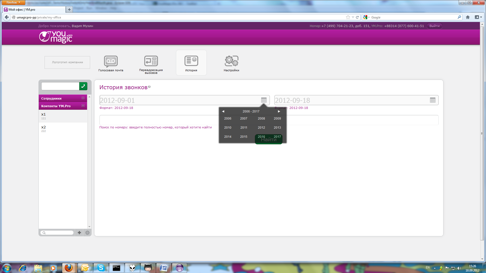

| Selenium-Command | Parameter-1 | Parameter-2 | Res.RC | Res.Selenium | Time [ms] | Calling-Class with Linenumber |
| executing createNewLoggingSelenium() |
| windowFocus | | | OK | OK | 34 | com.test.fw.SeleniumHelper#69 |
| windowMaximize | | | OK | OK | 44 | com.test.fw.SeleniumHelper#70 |
| executing getSelenium() |
| getLocation | | | OK | http://localhost:4444/selenium-server/core/Blank.html?start=true | 37 | com.test.fw.SeleniumHelper#30 |
| executing historyPageTest() |
| open | http://umagicpro-pp | | OK | OK | 1949 | com.LKS_Tests.HistorySwitchOnlyYearAndMonth#11 |
| click | css=span | | OK | OK | 37 | com.LKS_Tests.HistorySwitchOnlyYearAndMonth#13 |
| waitForPageToLoad | 30000 | | OK | OK | 1196 | com.LKS_Tests.HistorySwitchOnlyYearAndMonth#14 |
| type | id=edit-name-1 | 0776004151 | OK | OK | 70 | com.LKS_Tests.HistorySwitchOnlyYearAndMonth#15 |
| type | id=edit-pass-1 | 1234 | OK | OK | 31 | com.LKS_Tests.HistorySwitchOnlyYearAndMonth#16 |
| click | id=edit-submit-1 | | OK | OK | 66 | com.LKS_Tests.HistorySwitchOnlyYearAndMonth#17 |
| waitForPageToLoad | 30000 | | OK | OK | 3013 | com.LKS_Tests.HistorySwitchOnlyYearAndMonth#18 |
| click | css=a.bPopup__eClose.instructions-close | | OK | OK | 2239 | com.LKS_Tests.HistorySwitchOnlyYearAndMonth#19 |
| click | link=История | | OK | OK | 42 | com.LKS_Tests.HistorySwitchOnlyYearAndMonth#20 |
| click | id=edit-from-date-datepicker-popup-0 | | OK | OK | 89 | com.LKS_Tests.HistorySwitchOnlyYearAndMonth#22 |

automaticErrorScreenshot2012-09-18_15-26.png | 320 | com.LKS_Tests.HistorySwitchOnlyYearAndMonth#23 |
| click | //div[@id='datepicker_606']/div[9]/table/tbody/tr/td/table/tbody[3]/tr[2]/td[3]/a/span | | ERROR | com.thoughtworks.selenium.SeleniumException - ERROR: Element //div[@id='datepicker_606']/div[9]/table/tbody/tr/td/table/tbody[3]/tr[2]/td[3]/a/span not found | 359 | com.LKS_Tests.HistorySwitchOnlyYearAndMonth#23 |
| executing dismissSelenium() |
| close | | | OK | OK | 1252 | com.test.fw.SeleniumHelper#79 |
{kind=link}